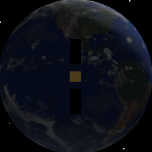
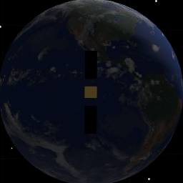

Demonstrates the image matching algorithm.
Since version 8.
------------------------------------------------------------------------
See also FImage, QForm, QLVLH, QMult, QPose, QUnit, Mag,
FindSolsticeOrEquinox, RVFromKepler, SunV1, CameraDatabase, SpaceCamera
------------------------------------------------------------------------
Contents
clear g; clear d; clear w;
test = 'ry';
g = load('SCForImaging');
Ephemeris
jD = FindSolsticeOrEquinox('spring equinox',2002);
[rECI, vECI] = RVFromKepler( [42167 0 0 0 0 0], 0 );
g.body(2).bHinge.angle = 0;
g.body(2).bHinge.axis = 2;
g.body(3).bHinge.angle = 0;
g.body(3).bHinge.axis = 2;
Camera
d.camera = CameraDatabase('256 square');
d.camera.up = [0;-1;0];
d.camera.focalLength = 0.1;
d.camera.aperture = 0.1;
d.camera.rho = 0.03;
Initialize the picture
qLVLH = QLVLH( rECI, vECI);
g.body(1).bHinge.q = QPose(qLVLH);
g.rECI = rECI;
g.qLVLH = qLVLH;
g.name = 'Satellite';
d.position = [];
d.planetName = 'Earth';
tagVisibleCameraWindow = SpaceCamera( 'initialize', d, g, jD(1) );
d.s = 1358*SunV1(jD(1));
d.tSamp = 10;
d.shadow = 0;
d.showScans = 0;
d.nScanLines = 10;
d.units = 'm';
d.planet = 'earth';
d.planetRadius = 6378.165;
[uSun, rSun] = SunV1(jD);
d.s = 1358*uSun;
d.r = rECI;
d.v = vECI;
d.rSun = rSun*uSun;

Earth vector
qLVLH = QLVLH( rECI, vECI );
uSunLVLH = QForm( qLVLH, uSun );
theta = atan2( uSunLVLH(1), uSunLVLH(3) );
CAD body structure
g.body(1).bHinge.q = QPose(qLVLH);
g.body(2).bHinge.angle = theta + pi;
g.body(3).bHinge.angle = theta + pi;
g.rECI = rECI;
g.qLVLH = qLVLH;
Draw the picture
d.camera.rBody = 1.000002*g(1).rECI*1000;
d.camera.distance = 0.000002*Mag(g(1).rECI)*1000;
qBodyToECI = g(1).body(1).bHinge.q;
d.camera.qBody = QPose( qBodyToECI );
SpaceCamera( 'update camera', tagVisibleCameraWindow, d.camera, jD );
SpaceCamera( 'update spacecraft', tagVisibleCameraWindow, g, jD );

Create the data structure
w.image = SpaceCamera( 'get frame', tagVisibleCameraWindow );
w.g = g;
tol = 1e-4;
switch test
case 'ry'
w.rECI0 = rECI + [0;.001;0];
w.q0 = g.body(1).bHinge.q;
case 'rz'
w.rECI0 = rECI + [0.0;0;.001];
w.q0 = g.body(1).bHinge.q;
case 'rx'
tol = 1e-6;
w.rECI0 = rECI + [0.001;0;0];
w.q0 = g.body(1).bHinge.q;
case 'qx'
w.rECI0 = rECI;
dQ = QUnit([1;0.1;0;0]);
w.q0 = QMult( g.body(1).bHinge.q, dQ );
end
opts = optimset('tolfun',1,'tolx',tol,'MaxFunEvals',200*6);
opts = optimset('tolfun',1,'tolx',tol,'MaxFunEvals',100,'display','iter');
w.tag = SpaceCamera( 'initialize', d, g, jD );
w.jD = jD;
w.camera = d.camera;
x0 = [0;0;0;0;0;0];
disp('Begin fminsearch. This can take a few minutes.')
[xNew, fval, exitflag, output] = fminsearch( 'FImage', x0, opts, w );
disp('Number of steps');
disp(output.iterations);
Begin fminsearch. This can take a few minutes.
Iteration Func-count min f(x) Procedure
0 1 58489
1 7 58418 initial simplex
2 9 34258 expand
3 10 34258 reflect
4 11 34258 reflect
5 12 34258 reflect
6 13 34258 reflect
7 15 16385 expand
8 17 14525 expand
9 19 7558 reflect
10 20 7558 reflect
11 21 7558 reflect
12 22 7558 reflect
13 24 7558 contract inside
14 26 7558 contract outside
15 28 7558 contract inside
16 30 7558 contract outside
17 32 5059 contract inside
18 34 5059 contract inside
19 36 4500 contract inside
20 37 4500 reflect
21 39 4500 contract inside
22 41 4500 contract inside
23 42 4500 reflect
24 44 3415 contract inside
25 46 2986 contract inside
26 48 2905 contract inside
27 50 2038 contract inside
28 51 2038 reflect
29 53 2038 contract inside
30 54 2038 reflect
31 56 1909 contract inside
32 58 1909 contract inside
33 60 1852 contract inside
34 62 1468 contract inside
35 64 1468 contract inside
36 66 1468 contract inside
37 68 1301 contract inside
38 70 1301 contract inside
39 72 1301 contract inside
40 73 1301 reflect
41 75 1301 contract inside
42 77 1232 contract inside
43 79 1232 contract inside
44 81 1184 reflect
45 83 1183 contract inside
46 85 1163 contract inside
47 87 1117 contract outside
48 89 1117 contract inside
49 91 1117 contract inside
50 92 1117 reflect
51 94 1107 reflect
52 96 1107 contract inside
53 98 1107 contract inside
54 100 1107 contract inside
Exiting: Maximum number of function evaluations has been exceeded
- increase MaxFunEvals option.
Current function value: 1107.000000
Number of steps
54
